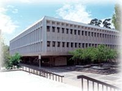

OCC's SMART-ICS Transfer Program

The University of California Irvine is home to the largest computing program in the UC system at the Donald Bren School of Information and Computer Sciences. Each year, many OCC students transfer to UCI and enter the ICS major, only to find that they spend an additional quarter (or two) completing missing lower-division computer science and math courses.To alleviate this problem, OCC and UCI have started the SMART-ICS program. This new articulation program allows OCC students to complete all of the lower-division computer science and mathematics course requirements of the ICS major at OCC. Transfer students completing the SMART-ICS requirements at OCC, and who are accepted into UCI and ICS major, come to the ICS major immediately prepared to begin upper-division courses in ICS.
OCC's SMART-ICS Program
The SMART-ICS program at OCC consists of seven Computer Science courses that must be completed with a grade of "C" or better, and five Math courses that must be completed with a passing grade.
Computer Science Courses
The required Computer Science courses are:
- CS 170: Java Programming I, (Fall/Spring)
- CS 150: C++ Programming I, (Fall/Spring)
- CS 250: C++ Programming II, (Fall only)
- CS 200: Data Structures, (Spring only)
- CS 116: Computer Architecutre, (Fall only)
- CS 220: Software Engineering, (Spring only)
- CS 265: Theories of Computation, (Spring only)
The Math Courses
The required Math courses are:
- Math 160: Introduction to Statistics, (Fall/Spring)
- Math 180 and 185: Calculus I and II, (Fall/Spring)
or
Math 182H: Honors Calculus - Math 230: Discrete Mathematics, (Spring only)
- Math 235: Linear Algebra, (Fall only),
or
Math 285: Intro Linear Algebra and Differential Equations, (Fall/Spring)
In each of these cases, you may submit the appropriate Honors course: (Math 160H for Math 160, for instance). While we attempt to offer these courses on the schedule shown here, sometimes classes are cancelled for low enrollment. Math 160, 180, 185, 230, and 285 are offered on a regular schedule, so you should probably plan on taking these instead of Math 182H or Math 235.
Sample Course Schedule
Here is a typical 2-year SMART-ICS course of study here at OCC. In addition to the SMART-ICS courses listed here, you'll need to complete your UC general education courses as well.
| Fall 1 | CS 170 | Math 160 | Math 180 | |
|---|---|---|---|---|
| Spring 1 | CS 150 | Math 185 | ||
| Fall 2 | CS 250 | CS 116 | Math 285 | |
| Spring 2 | CS 200 | CS 220 | CS 265 | Math 230 |
- The first sememster, you should take CS 170, Java Programming I, Math 160, Introduction to Statistics, and Math 180, Calculus I.
- The second semester you should take CS 150, C++ Programming I and Math 185, Calculus II. (You must complete CS 170 before taking CS 150.)
- The third semester you should take CS 250, C++ Programming II, CS 116, Computer Archicture, and Math 285, Linear Algebra and Differential Equations. These CS classes are offered only in the Fall.
- Your last semester, you should take CS 200, Data Structures, CS 220, Software Engineering, Math 230, Discrete Mathematics, and CS 265, Theories of Computation. These Computer Science courses are offered only in the Spring, and you must have completed both CS 150 and CS 250 before taking them.
Important: SMART-ICS students must first be admitted into UCI and into the ICS major before they can obtain subject credit for completing the SMART-ICS program. The SMART-ICS program does not guarantee admission to UCI or to the ICS major. Students should contact the OCC Transfer Center, and should become familiar with UCI's Transfer Admission, Selection and Preparation Web site to help them complete an appropriate transfer plan.